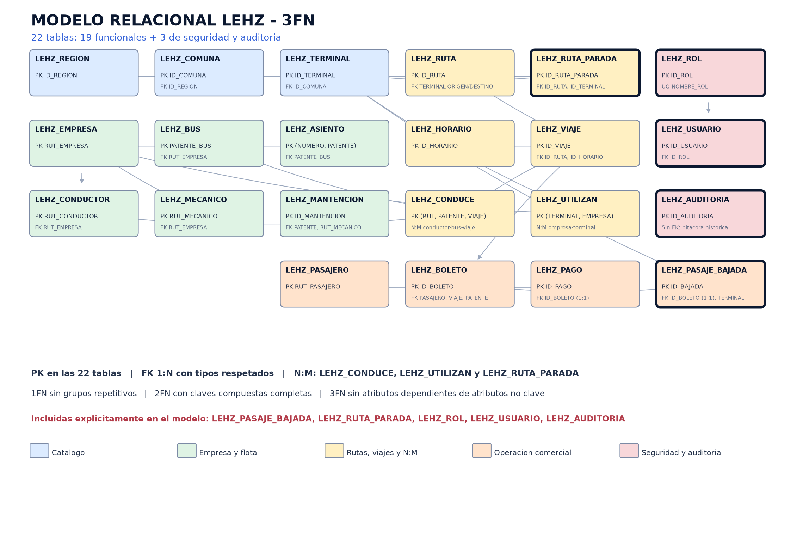

modelo_relacional.png.
El esquema se diseñó con dependencias funcionales explícitas:
SYS_REFCURSOR.Las claves foráneas y los CHECK no son atributos descriptivos copiados: son referencias y dominios validados por Oracle. Por eso no introducen dependencias transitivas entre atributos no clave.
| # | Tabla | Clave primaria | FK principales | Observación de diseño |
|---|---|---|---|---|
| 1 | LHAOMRJZ_REGION | ID_REGION | — | NOMBRE_REGION depende solo de ID_REGION. |
| 2 | LHAOMRJZ_COMUNA | ID_COMUNA | ID_REGION → LHAOMRJZ_REGION | FK_COMUNA_REGION. El nombre de la región no se copia. |
| 3 | LHAOMRJZ_TERMINAL | ID_TERMINAL | ID_COMUNA → LHAOMRJZ_COMUNA | FK_TERMINAL_COMUNA agregado con ALTER TABLE. |
| 4 | LHAOMRJZ_EMPRESA | RUT_EMPRESA | — | RAZON_SOCIAL, teléfono y correo dependen del RUT. CK_EMPRESA_RUT, CK_EMPRESA_TEL. |
| 5 | LHAOMRJZ_UTILIZAN | (ID_TERMINAL, RUT_EMPRESA) | Ambas columnas → LHAOMRJZ_TERMINAL y LHAOMRJZ_EMPRESA | Intermedia N:M terminal ↔ empresa. Sin atributos no clave. |
| # | Tabla | Clave primaria | FK principales | Observación de diseño |
|---|---|---|---|---|
| 6 | LHAOMRJZ_HORARIO | ID_HORARIO | — | HORA_SALIDA / HORA_LLEGADA dependen de ID_HORARIO. |
| 7 | LHAOMRJZ_RUTA | ID_RUTA | ID_TERMINAL_ORIGEN, ID_TERMINAL_DESTINO → LHAOMRJZ_TERMINAL | CK_RUTA_ORIG_DEST impide origen = destino. NOMBRE_RUTA, distancia y duración dependen de ID_RUTA. |
| 8 | LHAOMRJZ_RUTA_PARADA | ID_RUTA_PARADA | ID_RUTA → LHAOMRJZ_RUTA (ON DELETE CASCADE); ID_TERMINAL → LHAOMRJZ_TERMINAL | Intermedia N:M ruta ↔ terminal con atributos propios de la pertenencia. |
| 9 | LHAOMRJZ_VIAJE | ID_VIAJE | ID_HORARIO → LHAOMRJZ_HORARIO; ID_RUTA → LHAOMRJZ_RUTA | UQ_VIAJE_FECHA_HORARIO_RUTA evita duplicar un viaje. |
Nota: LHAOMRJZ_RUTA.HORARIO es la hora de referencia declarada de la ruta; LHAOMRJZ_HORARIO es el horario reutilizable asociado al viaje. No se copian columnas descriptivas entre tablas: la salida concreta se resuelve por FK en LHAOMRJZ_VIAJE.
| # | Tabla | Clave primaria | FK principales | Observación de diseño |
|---|---|---|---|---|
| 10 | LHAOMRJZ_BUS | PATENTE_BUS | RUT_EMPRESA → LHAOMRJZ_EMPRESA | MARCA, MODELO, CAPACIDAD, TARIFA_BASE dependen de la patente. CK_BUS_PATENTE. |
| 11 | LHAOMRJZ_ASIENTO | (NUMERO_ASIENTO, PATENTE_BUS) | PATENTE_BUS → LHAOMRJZ_BUS (FK_ASIENTO_BUS); el boleto referencia la PK compuesta | PISO y UBICACION dependen de la pareja número + bus. |
| 12 | LHAOMRJZ_CONDUCTOR | RUT_CONDUCTOR | RUT_EMPRESA → LHAOMRJZ_EMPRESA | Licencia y vigencia dependen del conductor. CK_CONDUCTOR_LICENCIA. |
| 13 | LHAOMRJZ_MECANICO | RUT_MECANICO | RUT_EMPRESA → LHAOMRJZ_EMPRESA | ESPECIALIDAD depende del mecánico. |
| 14 | LHAOMRJZ_MANTENCION | ID_MANTENCION | RUT_MECANICO → LHAOMRJZ_MECANICO; PATENTE_BUS → LHAOMRJZ_BUS | Fecha, descripción y costo dependen del evento de mantención. |
| # | Tabla | Clave primaria | FK principales | Observación de diseño |
|---|---|---|---|---|
| 15 | LHAOMRJZ_PASAJERO | RUT_PASAJERO | — | Nombre, apellidos, teléfono y correo dependen solo del RUT; no se repiten en boleto ni pago. |
| 16 | LHAOMRJZ_CONDUCE | (RUT_CONDUCTOR, PATENTE_BUS, ID_VIAJE) | Conductora, bus y viaje → LHAOMRJZ_CONDUCTOR, LHAOMRJZ_BUS, LHAOMRJZ_VIAJE | Intermedia N:M ternaria. Sin atributos no clave. |
| 17 | LHAOMRJZ_BOLETO | ID_BOLETO | RUT_PASAJERO, ID_VIAJE, (NUMERO_ASIENTO, PATENTE_BUS) | VALOR_BOLETO, ESTADO, emisión y anulación dependen del boleto. UQ_LHAOMRJZ_BOLETO_ASIENTO_ACTIVO impide doble venta activa. |
| 18 | LHAOMRJZ_PAGO | ID_PAGO | ID_BOLETO → LHAOMRJZ_BOLETO (UQ_PAGO_BOLETO, 1:1); RUT_PASAJERO → LHAOMRJZ_PASAJERO | MONTO_PAGO y METODO_PAGO dependen del pago. RUT_PASAJERO es FK de control, sin datos descriptivos. |
| 19 | LHAOMRJZ_PASAJE_BAJADA | ID_BAJADA | ID_BOLETO → LHAOMRJZ_BOLETO (UNIQUE, 1:1, ON DELETE CASCADE); ID_TERMINAL_BAJADA → LHAOMRJZ_TERMINAL | OBSERVACION y FECHA_REGISTRO dependen de la bajada. |
| 20 | LHAOMRJZ_AUDITORIA | ID_AUDITORIA | — | Bitácora desacoplada: TABLA_AFECTADA, OPERACION, USUARIO_BD (DEFAULT USER) y FECHA_EVENTO (DEFAULT SYSTIMESTAMP). |
| # | Tabla | Clave primaria | FK principales | Observación de diseño |
|---|---|---|---|---|
| 21 | LHAOMRJZ_ROL | ID_ROL | — | UQ_LHAOMRJZ_NOMBRE_ROL; descripción depende del rol. |
| 22 | LHAOMRJZ_USUARIO | ID_USUARIO | ID_ROL → LHAOMRJZ_ROL | USERNAME es clave candidata (UQ_LHAOMRJZ_USERNAME); hash, estado y fecha dependen del usuario. |
Total: 19 tablas en 02_create_tables.sql + 3 en 02_create_seguridad.sql = 22 tablas.
| Tabla intermedia | Relación resuelta | Clave primaria | Por qué no es una columna repetida |
|---|---|---|---|
LHAOMRJZ_CONDUCE | Conductor ↔ Viaje, con bus participante | (RUT_CONDUCTOR, PATENTE_BUS, ID_VIAJE) | Un conductor conduce muchos viajes y un viaje puede tener varios conductores/buses. La clave compuesta impide repetir la ternaria. No tiene atributos no clave. |
LHAOMRJZ_UTILIZAN | Empresa ↔ Terminal | (ID_TERMINAL, RUT_EMPRESA) | Varias empresas operan en un terminal y una empresa usa varios terminales. Guardar una lista de terminales en LHAOMRJZ_EMPRESA violaría 1FN. |
LHAOMRJZ_RUTA_PARADA | Ruta ↔ Terminal (paradas) | ID_RUTA_PARADA, con candidatas UQ_LHAOMRJZ_RUTA_ORDEN y UQ_LHAOMRJZ_RUTA_TERMINAL | ORDEN_PARADA, MINUTOS_DESDE_ORIG y PERMITE_BAJADA son propiedades de la pertenencia, no de la ruta ni de la terminal. |
LHAOMRJZ_PASAJE_BAJADA y LHAOMRJZ_PAGO no son N:M: tienen UNIQUE sobre ID_BOLETO, por lo que son relaciones 1:1 (un boleto tiene a lo más un pago y una bajada).
NOMBRE, APELLIDO1, APELLIDO2, TELEFONO, CORREO_ELECTRONICO_* están separados; FECHA_EMISION_BOLETO y HORA_EMISION_BOLETO son columnas distintas con dominios DATE / TIMESTAMP.PARADA1, PARADA2, ASIENTO1… Las paradas viven en LHAOMRJZ_RUTA_PARADA, los asientos en LHAOMRJZ_ASIENTO y los boletos en LHAOMRJZ_BOLETO.CK_BUS_TIPO_SERVICIO, CK_ASIENTO_UBICACION, CK_BOLETO_ESTADO, CK_PAGO_METODO, CK_LHAOMRJZ_PARADA_BAJADA, CK_LHAOMRJZ_USUARIO_ESTADO y los REGEXP_LIKE de RUT, teléfono y patente. Un dominio enumerado se modela como CHECK, no como texto libre repetido.(NUMERO_ASIENTO, PATENTE_BUS).| Tabla | Dependencia de la clave completa | Verificación |
|---|---|---|
LHAOMRJZ_ASIENTO | PISO, UBICACION → (NUMERO_ASIENTO, PATENTE_BUS) | El asiento 5 del bus A puede ser ventana y el asiento 5 del bus B pasillo: NUMERO_ASIENTO solo no determina UBICACION. |
LHAOMRJZ_CONDUCE | Sin atributos no clave | Tabla pura de intersección: 2FN se satisface por vacuidad. |
LHAOMRJZ_UTILIZAN | Sin atributos no clave | Idem. |
LHAOMRJZ_RUTA_PARADA | ORDEN_PARADA, MINUTOS_DESDE_ORIG, PERMITE_BAJADA → ID_RUTA_PARADA y a la candidata (ID_RUTA, ID_TERMINAL) | Conocer solo ID_RUTA no da el orden; conocer solo ID_TERMINAL no da los minutos desde el origen. |
En las tablas restantes la PK es simple, por lo que no hay dependencias parciales: RAZON_SOCIAL depende de RUT_EMPRESA, CAPACIDAD de PATENTE_BUS, VALOR_BOLETO de ID_BOLETO, MONTO_PAGO de ID_PAGO y NOMBRE_ROL de ID_ROL.
NOMBRE_REGION está solo en LHAOMRJZ_REGION; NOMBRE_COMUNA solo en LHAOMRJZ_COMUNA; RAZON_SOCIAL solo en LHAOMRJZ_EMPRESA; NOMBRE_RUTA solo en LHAOMRJZ_RUTA; MARCA/MODELO solo en LHAOMRJZ_BUS; nombres y apellidos solo en LHAOMRJZ_PASAJERO, LHAOMRJZ_CONDUCTOR y LHAOMRJZ_MECANICO. Si un nombre cambia se actualiza una sola fila: no hay anomalía de actualización.TOTAL_RECAUDADO, ASIENTOS_DISPONIBLES ni PROMEDIO_COSTO. Esos valores se calculan en LHAOMRJZ_PS_REP_RECAUDACION_VIAJES, LHAOMRJZ_PS_REP_OCUPACION_ASIENTOS y LHAOMRJZ_PS_REP_COSTOS_MANTENCION y se entregan por SYS_REFCURSOR.ESTADO, TIPO_SERVICIO, METODO_PAGO, UBICACION y PERMITE_BAJADA son CHECK. Si se requieren descripciones, se crearía una tabla catálogo con PK = código; nunca se copiaría la descripción en cada boleto o bus.TARIFA_BASE pertenece al bus; VALOR_BOLETO es el hecho de la transacción calculado por LHAOMRJZ_FN_CALCULAR_TARIFA_BUS al vender y persistido para auditoría comercial. No es copia de un atributo ajeno.LHAOMRJZ_PAGO.RUT_PASAJERO. Es FK redundante respecto de LHAOMRJZ_BOLETO.RUT_PASAJERO, pero no transporta atributos del pasajero (ni nombre, ni teléfono, ni correo). Como ID_BOLETO tiene UQ_PAGO_BOLETO, ID_PAGO e ID_BOLETO son claves candidatas: la dependencia es clave a clave, no de un atributo no clave a otro. Permite validar el pago contra el titular del boleto en PL/SQL sin copiar datos descriptivos.LHAOMRJZ_AUDITORIA. Guarda TABLA_AFECTADA e ID_REGISTRO como texto, no como FK, para que la bitácora sobreviva a borrados y no incorpore dependencias funcionales hacia entidades que cambian. Es un registro de eventos, no una entidad de negocio.UNIQUE no son atributos. UQ_LHAOMRJZ_BOLETO_ASIENTO_ACTIVO usa CASE para garantizar que solo un boleto EMITIDO/USADO ocupe un asiento por viaje: es integridad, no una columna calculada almacenada.Conclusión formal: para toda tabla R, cada determinante funcional relevante es una clave candidata de R (PK o UNIQUE). No existe A → B donde A y B sean atributos no clave. El esquema cumple 3FN y, por construcción, 1FN y 2FN.
"El esquema LHAOMRJZ tiene 22 tablas: 19 del modelo funcional y 3 de seguridad. Todas tienen PK declarada: simples como ID_REGION, compuestas como (NUMERO_ASIENTO, PATENTE_BUS) y ternarias como (RUT_CONDUCTOR, PATENTE_BUS, ID_VIAJE). Las FK respetan los tipos y las relaciones 1:N; los N:M se resolvieron en LHAOMRJZ_CONDUCE, LHAOMRJZ_UTILIZAN y LHAOMRJZ_RUTA_PARADA. En 1FN no hay listas ni grupos repetitivos: paradas, asientos y boletos son filas. En 2FN, los atributos de las claves compuestas dependen de la clave completa: el piso y la ubicación de un asiento dependen de número y bus; el orden de una parada depende de ruta y terminal. En 3FN, los nombres y descripciones se guardan una sola vez en su tabla madre y los datos derivados —recaudación, ocupación, costos— no se almacenan: se calculan en procedimientos con SYS_REFCURSOR. La única FK aparentemente redundante es RUT_PASAJERO en LHAOMRJZ_PAGO, pero ID_BOLETO es única, así que es clave-candidata a clave-candidata, sin copiar atributos descriptivos. Por eso el modelo alcanza 3FN sin perder trazabilidad."